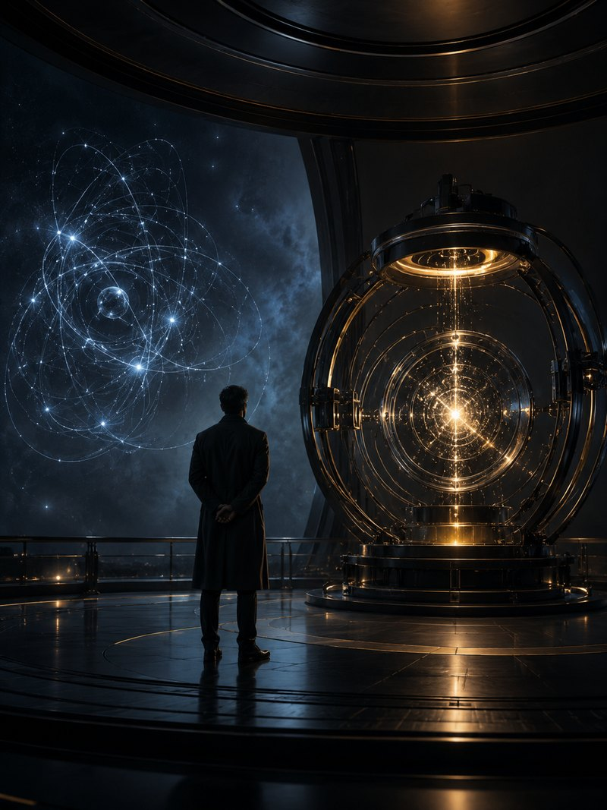

The Reasonable Effectiveness of Mathematics
Abstract
Eugene Wigner asked why mathematics, developed through abstract reasoning, describes the physical world with such precision. A symbol drawn on paper can guide a telescope, a particle detector, a bridge, or a spacecraft. Equations often travel farther than the situations that first produced them.
The puzzle becomes reasonable once the two fields are seen to answer the same demand. The historical path runs from the early Pythagorean association between number, ratio, and musical order, through Galileo's claim that nature must be read mathematically, to Wigner's twentieth-century formulation. The Predictive Universe answer begins with finite prediction. A system that knows anything must distinguish possibilities, test expectations, keep records, and correct errors. Mathematics studies the stable forms that make those operations possible. Physics selects the forms that can survive finite interaction, finite records, finite checks, and finite cost.
The Puzzle in Plain Terms
A locksmith who has never seen your front door can still cut a key that opens it, provided the lock and the key were made to the same standard. That is roughly what happens when a piece of mathematics invented for its own reasons turns out to run a piece of physics. It looks like luck until you notice that both were shaped to the same standard, and the standard is prediction.
Think about what any system has to do to know anything at all. It has to tell one situation from another, expect something, keep a record of what it expected, meet the outcome, and correct itself. Nothing counts as knowing without those five moves. Mathematics is the study of the patterns that survive that treatment in the abstract: what stays reliable under exact reasoning, what can be composed, what is left unchanged by a transformation. Physics is the study of which of those patterns can actually be carried by something finite, with real instruments, real records, and real costs.
So the two fields are sorting the same pile. Mathematics keeps every pattern that holds together. Physics keeps the smaller set that a finite observer can also use. Overlap is what you would expect. The reverse question is then the sharper one: why does so much mathematics stay outside physics? Most of it cannot be brought into contact with a measurement.
1. The Question Behind the Phrase
The phrase the unreasonable effectiveness of mathematics names a real pressure in science. The world is full of noise, friction, dust, heat, accidents, and incomplete measurements. Mathematics is made of symbols, definitions, proofs, and exact relations. The puzzle begins when the second domain gives such strong access to the first.
The surprising part is deeper than arithmetic. Counting stones, measuring land, and comparing weights already connect number to the world. Wigner's question concerns the stronger case. A mathematical structure can be created for internal reasons, refined by proof, and later become the right tool for physics. The fit can be narrow enough to predict new effects before they are seen.
Physics depends on this fit every day. It writes laws in mathematical form, turns measurements into numbers, and asks whether the next observation will follow the equation. The method works so well that it can become invisible. Wigner slowed the habit down and asked why it works at all.
The puzzle can be stated plainly:
Why do abstract patterns give reliable access to physical patterns?
A weak answer says that scientists choose the mathematics after the data are known. That happens sometimes, and it explains some cases. The deeper cases are the ones where mathematics points ahead of measurement, or where a structure created without a physical target later becomes physically central.
Universe 00110000
2. The Older Intuition
The thought that number reaches into nature is ancient. In the Greek tradition, Pythagorean thinkers treated ratio and harmony as clues to order. The safest historical point is modest. Musical intervals showed that pleasing sounds could correspond to simple numerical ratios. The octave, fifth, and fourth became early signs that number could reveal structure inside experience.
The later Pythagorean tradition grew many legends around Pythagoras. Modern historians handle those stories carefully. Huffman (2014) separates the early evidence from the later tradition, and the lasting philosophical move is clearer than the legend: nature could be intelligible through proportion. A vibration, a string, and a heard tone could be joined by number. That was enough to plant a powerful idea.
Plato and later mathematical philosophers gave that idea a wider setting. Geometry became a model of exact knowledge. Astronomy became a field where visible motions could be treated through ideal circles, angles, and ratios. Ancient science lacked modern experiment. It had already learned that visible change can hide a clean mathematical order.
Galileo sharpened the method in the seventeenth century. In The Assayer, he gave the image that still defines early modern science: the universe as a book that can be read only by learning mathematics. The common phrase, the book of nature is written in the language of mathematics, is a shortened way of naming that passage.
Galileo's point was practical. Equations were tools for bringing motion, fall, shape, and measurement under precise description. Nature had to be questioned in a way that returned quantities. A falling body became a case that could be timed, compared, repeated, and modeled.
Newton carried this style into a deeper synthesis. The motion of a falling body and the motion of the Moon could be placed under one law. The same mathematical form reached from a local experiment to the sky. That extension made the old intuition harder to dismiss. Mathematics was becoming a way to discover structure hidden from ordinary perception.
3. Wigner's Version of the Problem
Wigner brought the pressure into twentieth-century physics. His essay, The Unreasonable Effectiveness of Mathematics in the Natural Sciences, posed a serious problem about fit, selection, and prediction.
Wigner knew the issue from inside physics. He helped bring group theory and symmetry into quantum theory. He also saw that physicists often use mathematical objects whose depth was developed before their physical use was clear. The world later seems to recognize those objects.
His puzzle has two sides. First, mathematics supplies concepts with unexpected reach. Second, physical theories expressed through those concepts often become extremely accurate. The combined result feels strange. Human beings make formal structures under the discipline of proof. Nature then appears to answer in the same structures.
Wigner also saw that physics uses a selected portion of mathematics. The question is therefore selective:
Why does the physically successful portion of mathematics have this particular shape?
That form of the question matters. It keeps the discussion away from vague wonder. It asks what kind of filter joins mathematical structure to physical law.
Wigner's own essay left the mystery standing. The Predictive Universe framework gives a route through it by changing the starting point. It asks what any act of knowing must do before mathematics and physics split into separate disciplines.

Universe 00110000
4. What Mathematics Is Doing
Mathematics begins with disciplined distinction. One mark differs from another. One state follows from a rule, while another state fails the rule. A proof is a controlled path through those differences. It keeps each step accountable to the starting assumptions and to the permitted operations.
This gives mathematics its unusual power. Once a structure is defined, the mind can explore what follows from it. The structure may describe a physical system, a game, a space, a code, a transformation, or an object outside current physical use. The test inside mathematics is coherence. Do the definitions hold together? Do the operations preserve the relations they claim to preserve? Can a result be checked by another mind following the same rules?
Mathematics also compresses. A short rule can cover many cases. A proof can show why a whole family of statements holds at once. A good definition can remove clutter and reveal the moving part of a problem. Mathematicians value clarity because unclear distinctions break proof. They value generality because a structure that covers many cases carries more order.
This is why mathematical beauty often has a sober character. Beauty here means tight fit, low waste, and stable relation. A compact equation can hold a field of cases together. A symmetry can show which changes leave the real relation intact. These are working virtues. They help a finite mind carry more structure than raw memory could store case by case.
5. What Physics Adds
Physics begins when a formal relation meets the world through controlled contact. A prediction must be turned into an experiment, an observation, an instrument reading, or a repeatable check. A mark on paper has physical content when it helps a finite system expect, measure, record, and update.
This adds a stricter filter than proof. A mathematical space can be self-consistent while lacking a current physical role. A physical law has to guide interaction. It has to make a difference to what can be observed, built, measured, or corrected. Physics keeps the parts of mathematics that survive this extra demand.
The extra demand is finite. Experiments read finite marks. Observers store finite records. A theory may use ideal objects, because idealization is often useful. The physical content still enters through finite procedures: a detector clicks, a pointer moves, a record forms, an error bar is assigned, a prediction improves or fails.
This gives physics its practical edge. Some operational aspect of the mathematical object has to enter a finite cycle of use. The theory earns its role by changing what a real system can predict and verify.
The distinction is simple:
mathematics: coherent structure
physics: coherent structure with finite predictive use
Universe 00110000
6. The Predictive Universe Starting Point
The Predictive Universe framework starts from the act of knowing. Before a theory can speak about the world, some process must already be able to register a difference, hold a state, compare an expectation with an outcome, and update. The framework treats this predictive cycle as the operational root of knowledge.
A knowable world must offer patterns stable enough to learn. A predictor must learn them with finite access: partial inspection, limited storage, and costly updating. It has to use what it can mark, keep, test, and revise.
The basic cycle is simple:
expectation + interaction + record + correction → retained knowledge
The small cycle carries a lot. It already requires a difference between possible outcomes. It requires a way to say that an expectation succeeded or failed. It requires memory, because correction needs a trace that can guide the next attempt. It requires cost, because a record has to be made and maintained by something finite.
The Predictive Universe uses this route to connect the certainty of knowing with the structure of prediction. Its deeper root is the Cogito: the undeniable fact that some awareness or process is present. PU then asks what that process must minimally do in order to know anything at all: distinguish, anticipate, verify, record, and update. The framework begins with the structure any finite knowing system must use before it can do mathematics, physics, or philosophy.
7. From Prediction to Formal Thought
Once prediction is placed at the center, the basic moves of formal thought look less arbitrary. A predictor must separate possibilities. That gives distinction. It must avoid treating incompatible outcomes as the same success. That gives consistency. It must combine smaller checks into larger checks. That gives logical composition.
Error gives the next step. When expectation and result disagree, the system needs a way to locate the failure. It can change the model, refine the distinction, discard a bad rule, or store an exception. A proof is a refined version of this discipline. It checks a path of thought before the world has to correct it.
Mathematics is the explicit study of these stable moves. It strips away the immediate pressure of a particular experiment and asks what follows from the structure itself. That freedom is why mathematics can travel beyond one stone, one orbit, one detector, or one material. It studies the form of reliable relation.
The Predictive Universe claim is direct. Mathematics works in physics because both are shaped by the conditions that make prediction possible. Mathematics explores those conditions in abstract form. Physics realizes selected forms through finite systems.
The bridge is prediction. Mathematics gives the clean structure of reliable inference. Physics gives the finite world in which inference is tested.
Universe 00110000
8. Elegance, Compression, and Stable Order
Wigner noticed that mathematical concepts are often chosen for depth, reach, and beauty. The Predictive Universe framework translates that taste into a practical constraint. Finite systems have to compress. Their memory is limited. They need patterns that let many cases be handled with fewer rules.
Useful compression preserves what matters for prediction and drops surplus detail. A law of motion identifies the relation that keeps working when many irrelevant details change.
Elegant mathematics has the same profile. It holds many relations together in a compact, reliable way. This is why symmetry is so powerful in physics. A symmetry says which changes leave the predictive content unchanged. That saves work, blocks false distinctions, and reveals conserved structure.
In the Predictive Universe framework, this is one reason mathematics and physics meet at special structures. Mathematicians search for order that remains stable under proof. Physical systems retain order that remains useful under finite cost. Those searches can converge because both reward compact structure with strong invariance.
Elegance alone has to earn contact with measurement. The point is narrower and stronger: the traits that make a mathematical structure powerful are close to the traits that make a physical structure usable by finite predictors.
9. Physicalization
The key filter is physicalization. A mathematical structure enters physics through a finite way of using it. There must be a procedure, a record, a check, and a role in future prediction. A structure may remain valid mathematics while staying outside physical work in this framework.
In the Predictive Universe framework, this is the role of The Principle of Physical Instantiation: abstract structure becomes physically meaningful only when a finite protocol can realize it as a recordable, a verifier, a maintenance cost, and an update role. Compression then selects the lower-surplus forms that preserve the same predictive function.
A simple example is length. Geometry can speak about exact lines and perfect points. A physical measurement gives a finite record: this ruler, this mark, this uncertainty, this stored result. The ideal object helps organize the measurement. The physical content appears in the finite operation that can be performed and checked.
The same idea applies at higher levels. A quantum state, a field, a symmetry, or a spacetime metric carries physical meaning through what it lets finite systems predict and verify. If two descriptions differ only in a label beyond finite registration, physics counts them as the same physical reality.
This is where the Predictive Universe answer becomes sharper than a general appeal to usefulness. Its question is which distinctions can enter finite predictive life. A distinction outside interaction, record, check, maintenance, and update is surplus for physics.
The result can be stated compactly:
physical meaning = finite difference in predictive use
This keeps mathematics larger than physics. It also explains why physics can draw so much from mathematics while remaining distinct from mathematics. Physics is predictive structure expressed through selected mathematical forms under the added pressure of finite embodiment, finite verification, and finite cost.
10. Why Mathematics Works in Physics
The puzzle now has a clear answer. Mathematics works in physics because a knowable world must contain stable predictive structure, and a finite knower must use stable forms to learn that structure. Mathematics studies the forms. Physics tests which forms can be realized in the world.
This answer keeps the claim limited. The overlap between successful mathematics and successful physics is constrained by prediction, finite access, records, verification, and cost.
That is enough to reduce Wigner's mystery. The success of mathematics becomes less like a lucky coincidence and more like a sign that both domains are filtered by the same deep demand. A relation that supports reliable prediction has a reason to appear in mathematical thought. A relation that supports reliable finite prediction has a reason to appear in physical law.
This also explains why physical theories often become simpler at deeper levels. A deeper law reorganizes many facts through fewer stable relations. The gain is predictive compression. The theory sees what can change, what must remain invariant, and which distinctions can be ignored without losing predictive power.
The answer remains disciplined. The Predictive Universe framework gives a criterion for physical content while keeping current physics open to correction. A mathematical structure matters to physics when it can be carried by finite interaction and used to improve prediction.

Universe 00110000
11. Conclusion
Wigner's question remains powerful because it starts from a real fact about science. Mathematics often reaches the physical world with more precision than common sense expects. The historical roots are old: ratio in music, geometry in astronomy, Galileo's mathematical reading of nature, and the modern physics that made Wigner's title unavoidable.
The Predictive Universe framework gives the puzzle a source. A world that can be known must have stable predictive structure. A finite knower must use distinctions, records, tests, corrections, and compression. Mathematics studies the reliable forms of those operations. Physics keeps the forms that can be tested and maintained in finite reality.
Mathematics studies stable predictive form.
Physics realizes selected forms through finite testable prediction.
References
- Galilei, Galileo. "The Assayer." In Discoveries and Opinions of Galileo, translated by Stillman Drake, Doubleday, 1957, 229–280.
- Huffman, Carl A., editor. A History of Pythagoreanism. Cambridge University Press, 2014.
- Newton, Isaac. The Principia: Mathematical Principles of Natural Philosophy. Translated by I. Bernard Cohen and Anne Whitman, University of California Press, 1999.
- Wigner, Eugene P. "The Unreasonable Effectiveness of Mathematics in the Natural Sciences." Communications on Pure and Applied Mathematics 13, no. 1, 1960, 1–14.